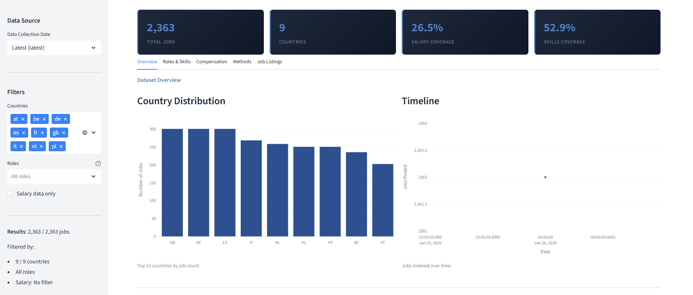
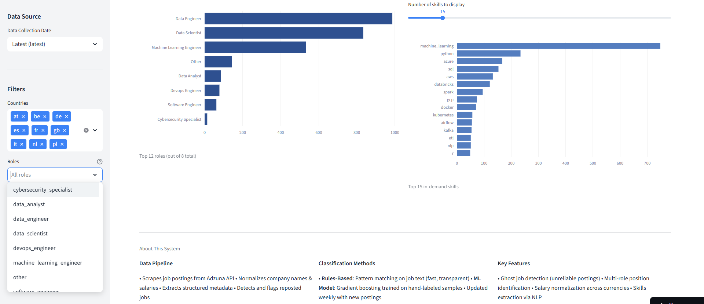
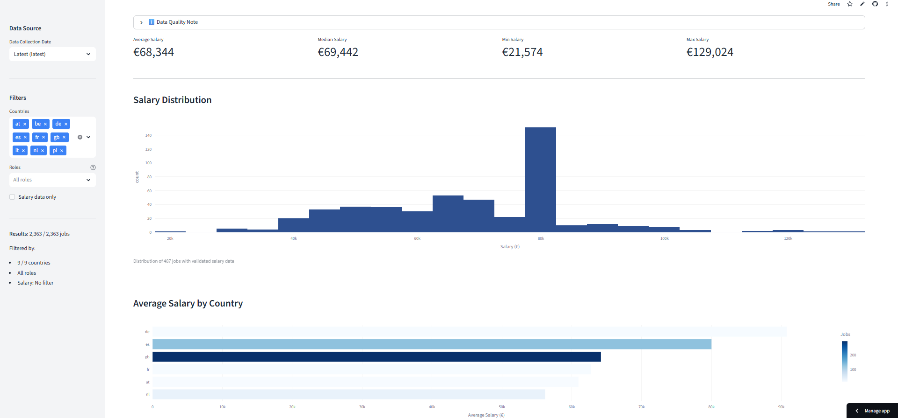
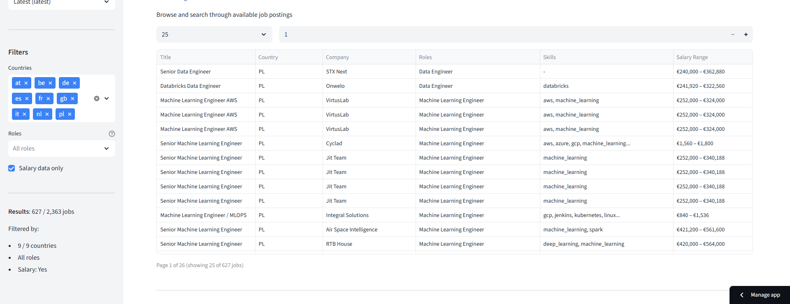

Overview
Job Market Intelligence is an automated job market analysis platform that collects, processes, and analyzes data science job postings
across Europe. The system features ML-powered role classification (91.6% F1-score), ghost job detection through historical tracking,
and an interactive Streamlit dashboard. With automated weekly updates via GitHub Actions and zero-cost deployment on Streamlit Cloud,
this project demonstrates end-to-end data engineering and MLOps expertise.

Interactive Dashboard: Real-time job market insights with filtering and visualizations
✨ Key Features
Automated Data Pipeline
- API Integration: Automated fetching from Adzuna Job Search API across 5 European countries
- Data Processing: Comprehensive normalization, validation, and deduplication pipeline
- Weekly Updates: GitHub Actions scheduled workflow runs every Monday at 2 AM UTC
- Historical Tracking: 90-day snapshot retention for trend analysis and ghost job detection
Machine Learning Models
- Role Classifier: Logistic Regression with TF-IDF features
- 91.6% F1-score
- 91.0% precision, 92.3% recall
- Classes: Data Engineer, Data Scientist, ML Engineer, Data Analyst
- Salary Predictor: Ridge Regression model
- R² = 0.70
- MAE = €9,847
- Features: Role, country, skills, job description length

ML Classification Results: High-accuracy role predictions with detailed performance metrics
Ghost Job Detection System
- SHA1 Fingerprinting: Unique job identification across postings
- Historical Analysis: Track job reposts and suspicious patterns
- Pattern Detection: Identify companies with frequent reposting behavior
- Automated Alerts: Flag potentially fake or "always open" positions
Interactive Dashboard
- Real-time Filtering: By role, country, skills, salary range
- Data Visualizations: Role distribution, salary trends, skills analysis
- Geographic Insights: Market demand across European countries
- ML Comparison: Side-by-side view of ML vs rule-based classification
- Ghost Job Alerts: Highlight suspicious job postings

Salary Insights: Comprehensive analysis of compensation trends across roles and countries
🛠️ Technology Stack
Data Processing & ML
- pandas 2.1.0+: Data manipulation and analysis
- numpy 1.24.0+: Numerical computing
- scikit-learn 1.3.0+: Machine learning models
- pyarrow 14.0.0+: Efficient parquet file handling
Web & Visualization
- Streamlit 1.28.0+: Interactive dashboard
- matplotlib 3.7.0+: Data visualization
- seaborn 0.12.0+: Statistical graphics
API & Data Collection
- requests 2.31.0+: HTTP library for API calls
- Adzuna API: Job posting data source
- python-dotenv 1.0.0+: Environment variable management
DevOps & CI/CD
- GitHub Actions: Automated testing and deployment
- Streamlit Cloud: Free production hosting
- pytest 7.4.0+: 53 comprehensive tests
- pytest-cov 4.1.0+: Test coverage reporting
🏗️ Architecture
Data Pipeline Flow
- Data Collection → Adzuna API → Raw JSON storage
- Normalization → Clean & validate → Standardized format
- Fingerprinting → SHA1 hashing → Unique job identifiers
- ML Classification → TF-IDF + Logistic Regression → Role labels
- Snapshot Creation → Historical archiving → Ghost detection
- EDA & Insights → Statistical analysis → Report generation
- Dashboard Update → Streamlit Cloud auto-deploy → Live data

Skills & Trends: In-depth analysis of most demanded skills and market patterns across roles
Project Structure
├── ingestion/ # Data collection from Adzuna API
├── processing/ # Data cleaning, labeling, fingerprinting
├── ml/ # ML models for role classification
├── analysis/ # EDA, insights, ghost job detection
├── orchestration/ # Pipeline runner
├── app/ # Streamlit dashboard
├── tests/ # 53 comprehensive tests
└── data/
├── raw/ # Raw API responses
├── curated/ # Processed datasets
└── snapshots/ # Historical data
🔄 CI/CD Pipeline
Automated Workflow
- Every Push → GitHub Actions CI
- Run 53 pytest tests
- Generate coverage reports
- Perform security scanning (Trivy)
- ✅ All tests must pass
- Weekly Schedule (Monday 2 AM UTC)
- Fetch latest job data from Adzuna
- Process and label all roles
- Detect ghost jobs
- Generate EDA reports
- Commit results to repository
- Streamlit Cloud
- Auto-deploy on every commit
- Update dashboard with fresh data
- Zero downtime deployment
📊 Data Coverage
Geographic Scope
- 🇦🇹 Austria
- 🇧🇪 Belgium
- 🇩🇪 Germany
- 🇵🇱 Poland
- 🇬🇧 United Kingdom
Job Roles
- Data Engineer
- Data Scientist
- Machine Learning Engineer
- Data Analyst
🧪 Testing
Test Coverage: 53 comprehensive tests
- Unit Tests: Individual component validation
- Integration Tests: End-to-end pipeline workflows
- Data Quality Tests: Validation and integrity checks
- ML Model Tests: Prediction accuracy and performance
- API Tests: Data fetching and error handling
Test Categories
- ✅ 26 tests: Original pipeline components
- ✅ 19 tests: Fingerprinting and deduplication
- ✅ 8 tests: Ghost job detection
💰 Cost Optimization
100% Free Deployment
- Streamlit Cloud: $0/month for public repos
- GitHub Actions: 2000 free minutes/month
- Pipeline: ~30 min/week = 120 min/month (6% usage)
- CI tests: ~5 min per push
- GitHub Storage: Free for public repositories
- Total Cost: $0.00/month ✨
📈 Key Metrics
- ✅ 91.6% F1-score for role classification
- ✅ R² = 0.70 for salary predictions
- ✅ 53/53 tests passing (100% pass rate)
- ✅ Weekly updates fully automated
- ✅ 90-day historical data retention
- ✅ 447+ jobs analyzed per run
- ✅ 5 countries covered
- ✅ 4 role types classified
🚀 Live Demo
Experience the dashboard live at: https://job-reports.streamlit.app/
Dashboard Features
- Overview Tab: Summary statistics, key metrics, geographic distribution
- Roles & Skills: Role distribution, top skills by role, multi-role analysis
- Salary Analysis: Salary distributions, country comparisons, trends
- ML Comparison: Side-by-side ML vs rule-based classification accuracy
- Job Explorer: Searchable table with 100+ jobs, filters, and details
📚 Project Highlights
- ✅ Production-ready data pipeline with automated orchestration
- ✅ ML-powered role classification outperforming rule-based approaches
- ✅ Novel ghost job detection system using fingerprinting
- ✅ Interactive dashboard with real-time filtering and visualizations
- ✅ Comprehensive test coverage ensuring reliability
- ✅ 100% free deployment with automated updates
- ✅ Clean, maintainable codebase following best practices
- ✅ Full CI/CD pipeline with GitHub Actions
🎯 Technical Skills Demonstrated
- Data Engineering: ETL pipelines, data validation, deduplication
- Machine Learning: Supervised learning, NLP, model evaluation
- MLOps: Automated training, deployment, monitoring
- DevOps: CI/CD, automated testing, cloud deployment
- API Integration: RESTful APIs, rate limiting, error handling
- Data Visualization: Interactive dashboards, statistical graphics
- Software Engineering: Clean code, testing, documentation
🔗 Repository
View the complete source code at: github.com/moroianu13/job-market-intelligence
Repository Stats
- ⭐ Clean, well-documented codebase
- 📝 Comprehensive README with setup instructions
- ✅ GitHub Actions workflows for CI/CD
- 🧪 53 automated tests with pytest
- 📊 Data files and reports included